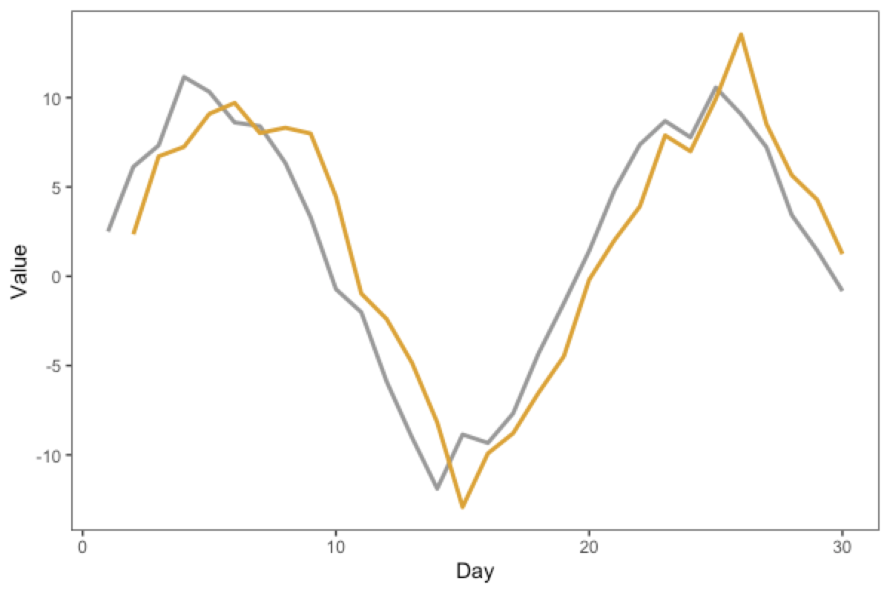
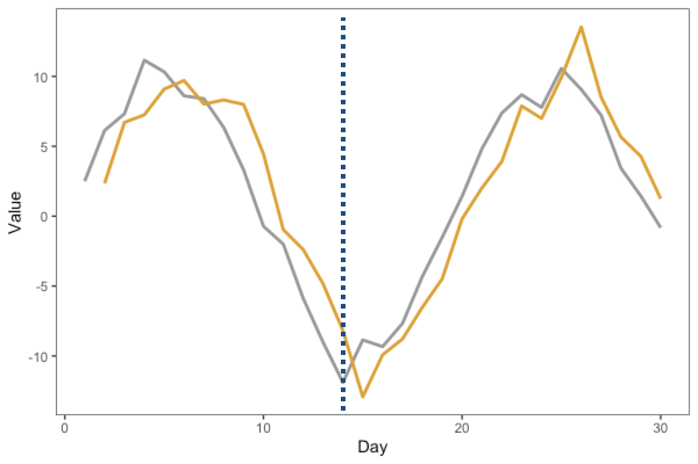
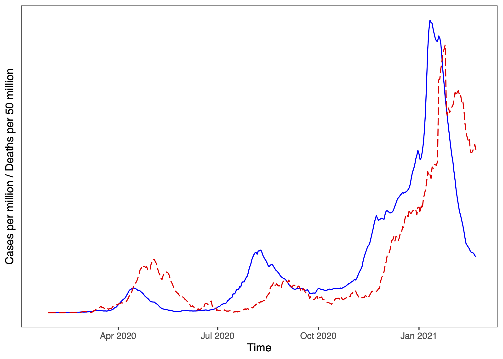

13.3 Regression-based forecasting models
Next, we turn to regression-based forecasting, where we want to predict the value of \(Y\) at time \(t\), using another variable, \(X\), perhaps at the same time \(t\).
\[Y_t = b_0 + b_1 X_t\]
Sometimes \(X_t\) and \(Y_t\) may be correlated, but they may also offset in time. For example, the time you spent studying today will have an effect on your grades tomorrow or sometime in the future, but has no influence on your grades in the past. So if \(X_t\) is the number of hours you spent studying on day \(t\), and \(Y_t\) is your grades on a test on day \(t\), then changes in \(X_t\) will precede changes in \(Y_t\), and so we call this \(X\) variable a leading variable as it leads in front. Here’s a summary:
- If changes in \(X_t\) precede changes in \(Y_t\), such an \(X\) variable is a leading variable.
- Conversely, a variable that follows movements of other variables is a lagging variable.
- If both variables tend to co-vary, these variables are coincident.
Here are some examples of leading variables, which may occur some \(lag\) days before, compared to the dependent variable that we may want to predict:
| Leading variable | Dependent variable that we care about |
|---|---|
| Amount of time spent studying on day \((t-lag)\) | Grade on exam on day \(t\) |
| Forest Fires in Indonesia on day \((t-lag)\) | Haze in Singapore on day \(t\) |
| Amount spent on advertising on day \((t-lag)\) | Revenue from products sold on day \(t\) |
The graph below shows two variables (gold and grey) varying over time. Which variable is the leading variable, and which is the lagging variable?

Take a few moments to think about this, because it’s not that intuitive.
Here’s a reasoning “rule” that can help. Draw a vertical line near a “landmark” or “feature” in the graph. For example, in the graph below, we have added a dashed line at the trough (the “valley”, or the lowest point) of the grey curve, which happens around “Day 14” or so. We see that the gold curve reaches its own trough some time later, around “Day 15”.

Thus, we can infer that as the grey curve reaches the “landmark” first, the grey line is the leading variable, and the gold line is the lagging variable
Here’s a (sobering) real-life example. Here is a plot, where one line represents Japan’s Covid-19 Cases (per million) and the other line represents Covid-19 Deaths (per 50 million10) across the same period, up till early 2021.
Which graph do you think corresponds to Cases, and which to Deaths?
(Hint: First, think about which variable should be leading and why?)

Note that you can always regress the dependent variable, \(Y\), against a past (lagged) version of itself.
\[\text{Sales}_t = b_0 + b_1 \text{Sales}_{t-1}\]
This is called an Autoregressive model (of order 1, or AR(1)). auto means self, and regress, so auto-regress means a model that regresses on oneself. An AR(2) model will also have a term for \(t-2\), and so forth.
(Q: What is the difference between this and the simple moving average models?11)
If \(X\) is a leading variable of \(Y\) (i.e., we expect \(X\)’s at previous time points to impact \(Y\) at the current time), then we can use lagged values of \(X\) (i.e., \(X_{t-lag}\)) to predict the current \(Y_t\). In other words, we need to LAG \(X\) to have the \(X\) and \(Y\) variables be coincident. If you have these variables in a dataset where each row corresponds to values at a particular time, then you can use the lag function from the dplyr package to make a new lagged variable.
# you can use dplyr's "lag" function to create these lagged regressors
df$x_lagged = dplyr::lag(df$x,1) # lagging the x variable by 1 unit of time You can then use this x_lagged in a linear model, e.g. lm(y ~ x_lagged). But how much lag should we use? This is something that depends on the specific context: perhaps you may have a theoretical reason or some hypothesis about the best lag, or you may also wish to explore from the data what may be the best lag to use.
Example
Here’s a pre-Covid example that also involves masks (In SouthEast Asia we tend to have seasonal haze, which causes an increase in sales of masks).
Imagine that in recent weeks, the increase in haze has likely caused an increase in sales of N95 masks. Perhaps your educated opinion is that this does not happen immediately, as people take a few days to respond (e.g., inertia, people have to make time to go to pharmacy…). So we might expect that a spike in Haze on say, Monday, may result in an increase in Mask Sales some \(lag\) days later.
So let’s consider the following model:
\[\text{MaskSales}_t = b_0 + b_1 \text{Haze}_{t - lag}\]
In this model, we are using the Haze Level \(lag\) days ago to predict Mask Sales on the current day. Why regression-based forecasting is so flexible is that you can, in addition to the lagged time series variable, also add in other variables to make it a multiple regression. For example, you may also want to see which of two store locations will generate more mask sales. These other variables may not necessarily be time-series variables so we don’t need to have time indices for these variables. So we may write the following model:
\[\text{MaskSales}_t = b_0 + b_1 \text{Haze}_{t - lag} + b_2 \text{StoreLocation} \]
The interpretation of these variables is the same as regular multiple regression (e.g., see earlier Chapters).
Because cases and deaths are numerically different, we plot Covid Deaths per 50 million so the curves are numerically more similar. (Japan’s mortality rate across this time period is about 2%.)↩︎
The difference is in the math of the models: regression models fit the \(b_0\) and \(b_i\) regression coefficients, whereas smoothing models have fixed constants (equivalently, it sets \(b_0=0\) and \(b_i = 1/k\) where \(k\) is the width of the simple moving average window↩︎